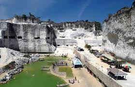
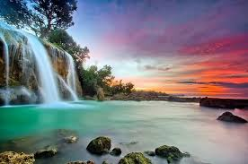
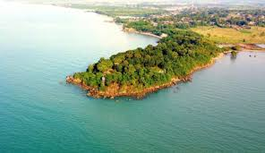

Temukan keajaiban alam, tebing eksotis, hingga pulau tersembunyi di empat kabupaten Pulau Madura.

Pulau kecil dengan pasir putih yang sangat lembut dan taman bawah laut yang masih terjaga keasriannya.
Lihat Detail
Eksotisme tebing kapur putih raksasa dengan danau berwarna toska yang menawan di tengah area penambangan.
Lihat Detail
Keunikan air terjun yang alirannya jatuh langsung ke bibir pantai, menyajikan pemandangan yang langka di Indonesia.
Lihat Detail
Menikmati hamparan laut lepas dari atas tebing karang yang tenang, tempat terbaik untuk melihat matahari terbit.
Lihat Detail